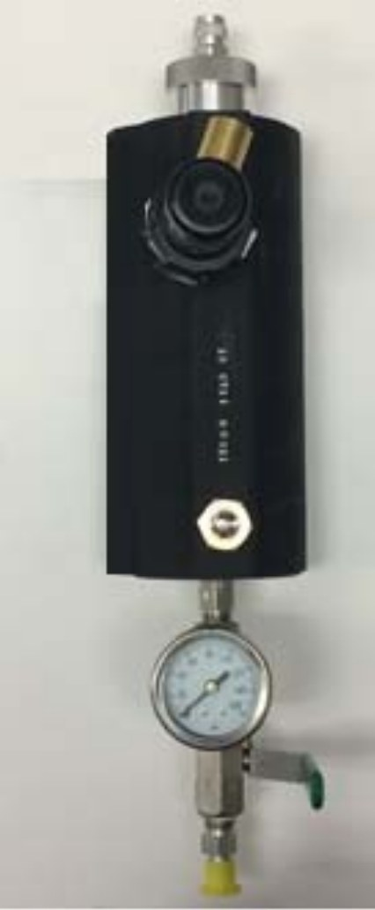
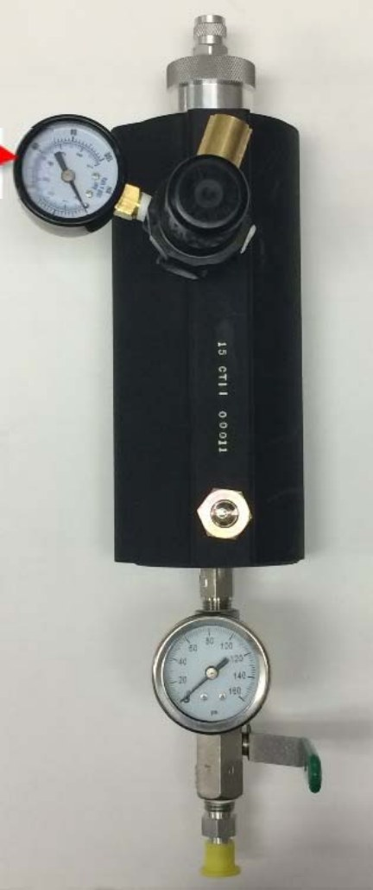

Doc no. MOC-TSB-15-17 // Vol. 15 No. 17 // Sep 15, 2015 // Fuel
Cleaner Application Tool Comparison
7245072480
The function of both tools (Part No. 72450 & Part No. 72480) is the same. However, the new Cleaner Application Tool II (Part No. 72480) comes equipped with a 2nd Pressure Gauge attached to the air regulator and the hose assembly needed to perform services on return-less fuel systems. The original CAT tool (Part No. 72450) can easily be upgraded to the new CAT tool (Part No. 72480) by adding the Pressure Gauge (Part No. 98004) to the air regulator and the hose assembly for return-less fuel systems (Part No. 73055), both of these parts are available separately.
What's new
Contact
For more information, contact the Machine & Equipment Department at 866.244.6621.


Part numbers
| Part No. | Description | Notes |
|---|---|---|
| 72450 | CAT tool | |
| 72480 | Cleaner Application Tool | |
| 98004 | Pressure Gauge | |
| 73055 | Tool, Fuel Pump Bypass |